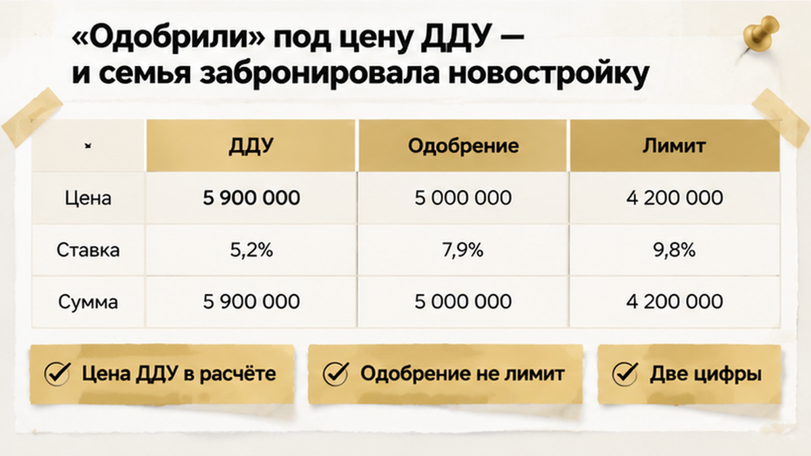
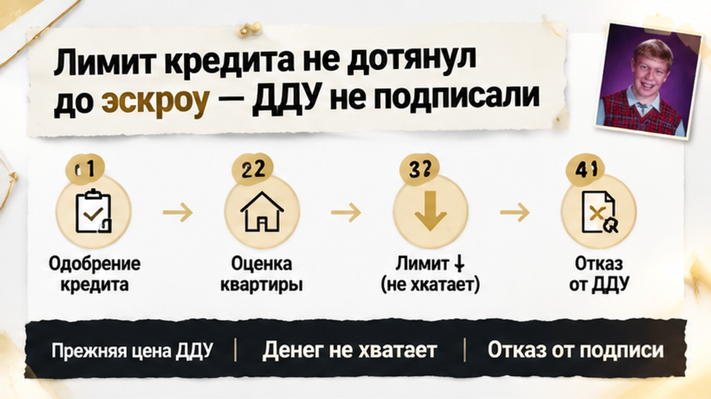

В Тюмени оценка новостройки оказалась на 900 тысяч рублей ниже цены ДДУ — банк урезал кредит, и семья отказалась подписывать договор. До сделки оставались сутки: квартира была забронирована, первоначальный взнос посчитан, а предварительное одобрение ипотеки уже создавало ощущение, что денег хватит. Но в отчёте банка будущая квартира стоила меньше, чем в договоре застройщика, и привычный расчёт рассыпался. Перед покупателями встал уже не вопрос выбора новостройки, а вопрос: где взять недостающие собственные деньги — или вовремя остановиться.
Я Святослав Шакин, The Риэлтор, Тюмень. В Telegram и MAX разбираю сделки на понятных цифрах: где есть подтверждённое условие банка, а где пока только обещание.
Семья выбрала квартиру в строящемся доме и внесла плату за бронь. Застройщик показал цену ДДУ — договора участия в долевом строительстве, по которому покупают будущую квартиру. Под эту сумму сложили свои деньги и ожидаемый кредит: вместе они должны были закрыть покупку.
Предварительное одобрение поддерживало именно такой расчёт. Поэтому следующие недели воспринимались как обычная дорога к подписанию: банк проверяет объект, собирает документы, застройщик согласовывает условия. Квартира оставалась той же, цена не менялась, первоначальный взнос был посчитан.
Но у банка ещё оставался отдельный вопрос: какой залог он принимает и сколько готов выдать окончательно. Здесь важно разделить два ответа.
Первый — банк в целом согласен кредитовать покупателя. Второй — банк принял конкретную квартиру, её стоимость как будущего залога и итоговый лимит кредита. Предварительное одобрение не подтверждает, что вся цена ДДУ уже обеспечена деньгами.
Бронь тоже не закрывает этот пробел. Она действует по отдельному договору и не заменяет ни окончательное кредитное решение, ни подписанный и зарегистрированный ДДУ.
Похожий разрыв виден и в истории про одобренную семейную ипотеку, когда эскроу так и не открыли. Эскроу — это специальный счёт для денег за квартиру, а не автоматическое продолжение слова «одобрено». До расчёта через него нужно пройти оставшиеся банковские и договорные этапы.
У этой семьи незавершённым оказался именно вопрос суммы: сколько банк даст под выбранную новостройку и хватит ли этого кредита вместе со своими деньгами на цену договора.

Отчёт банк прислал за день до назначенного подписания ДДУ. В нём появилась другая стоимость квартиры — не та, что стояла в договоре застройщика. Цена покупки при этом не уменьшилась: продавец по-прежнему ожидал полную сумму.
Так в одном расчёте встретились две цифры, которые покупатели до этого фактически принимали за одну. Для семьи это был неприятный момент: прежний план выглядел готовым, но окончательного банковского результата они ещё не видели.
Для оценки в строящемся доме не обязательно заходить в готовую квартиру с рулеткой. Оценщик может работать по проектным документам, характеристикам будущего объекта, стадии строительства и аналогам — похожим квартирам для сравнения. Поэтому разница с ценой застройщика возникает ещё до того, как в квартире можно сделать осмотр.
Само отсутствие осмотра не доказывает, что отчёт ошибочный. И оценочную стоимость я бы не называл единственной «настоящей ценой», которая разоблачает продавца.
У застройщика есть цена продажи. У банка — стоимость, которую он принимает для расчёта кредита под залог. Банк смотрит, хватит ли возможной выручки от продажи этого залога, если заёмщик перестанет платить. А покупателю в итоге нужен другой ответ: сколько кредитных денег останется после оценки и хватит ли их вместе со своим взносом на ДДУ.
В расчёте появились две разные суммы: цена квартиры у застройщика и стоимость будущего залога, которую принял банк. Вторая оказалась на 900 тысяч рублей ниже первой. Но цену в ДДУ из-за этого никто автоматически не переписывает: застройщик продаёт квартиру за свою сумму, а банк решает, сколько готов выдать под её обеспечение.
Для семьи вопрос звучал уже не теоретически: сколько собственных денег придётся добавить к кредиту? Их первоначальный расчёт был собран под цену застройщика. Определённая сумма своих средств плюс ожидаемый кредит должны были полностью закрыть покупку. После оценки эта конструкция перестала сходиться.
Я бы не называл оценку банка «настоящей ценой» квартиры. У продавца есть цена продажи. У банка — стоимость, которую он принимает для расчёта кредита под залог. Банк смотрит, в том числе, хватит ли возможной выручки от продажи залога, если заёмщик перестанет платить.
Поэтому более низкая оценка сама по себе не доказывает ни ошибку банка, ни обман со стороны застройщика. Цена, на которую согласились покупатель и продавец, не обязана стать основой банковского расчёта.
Но разрыв в 900 тысяч не означает, что кредит автоматически уменьшится ровно на эту сумму. Банк берёт принятую стоимость и рассчитывает допустимый лимит кредита от неё. Какая именно доля будет доступна, зависит от банка, ипотечной программы и первоначального взноса. Единого процента для всех сделок здесь нет.
Точную сумму доплаты можно узнать только после пересчёта окончательного лимита. Простым вычитанием оценки из цены ДДУ её не определить.
В этой истории ставка не выросла, и прежний ежемесячный платёж не стал больше. Уменьшилась сама сумма, которую банк согласился выдать. Это другой механизм, чем в случае, когда накануне ДДУ меняются условия ипотеки из-за ставки. Здесь проверять нужно было не только посильность платежа, а наличие денег на всю покупку.
К назначенному подписанию у семьи был договор с прежней ценой, но подтверждённого источника денег на всю сумму уже не было. Несколько недель согласований этого не изменили: объект проверили, документы собирали, но собственных средств больше не стало.
Подписать ДДУ в надежде, что недостающая сумма потом найдётся, означало принять обязательство без готового расчёта. Поэтому семья отказалась подписывать договор на этих условиях.
Эскроу здесь — не волшебное слово, после которого покупка автоматически обеспечена. Это конкретный счёт для оплаты квартиры: деньги вносят после государственной регистрации договора, и именно тогда покупка считается оплаченной по согласованной схеме.
Если банк сократил кредит, полную цену всё равно нужно обеспечить своими и кредитными деньгами по согласованной схеме. Сам счёт недостающую часть не покрывает и цену квартиры не уменьшает.
Вот почему предварительное «одобрено» ещё не означало, что покупка полностью обеспечена деньгами. Между решением по заёмщику и расчётом за конкретную новостройку остаются отдельные этапы — каждый со своим результатом. Как и в истории, где семейную ипотеку одобрили, а эскроу так и не открыли, одного статуса заявки недостаточно.
Здесь граница оказалась ещё раньше: ДДУ не подписали и не зарегистрировали, эскроу не открыли, деньги на него не ушли. Квартира при этом оставалась забронированной, но вопрос с полной суммой уже нельзя было откладывать.

Через 48 часов бронь сняли. Ту же квартиру застройщик предложил уже на 200 тысяч рублей дороже. Семья отказалась искать дополнительные деньги под уменьшенный кредит и новую цену. На этом история с выбранной новостройкой закончилась: ни покупки, ни уступки со стороны продавца.
Здесь важно не смешивать последствия. Подорожание — отдельное решение застройщика, а не обязательный результат низкой оценки. У другого продавца условия могут быть другими. С платой за бронь тоже нельзя обещать: «Банк урезал кредит — вам всё вернут». Возврат, сроки и последствия отказа нужно смотреть в договоре бронирования.
Квартиру семья не сохранила. Зато остановилась до обязательства оплатить её по ДДУ. Отказаться до подписания — не то же самое, что искать недостающее после регистрации. Для меня это главный результат проверки: покупатели смогли сказать «нет», когда расчёт перестал сходиться.
Вы бы искали дополнительные 900 тысяч ради забронированной квартиры, если менеджер до последнего называл оценку формальностью, или отказались бы от сделки?
Я бы начинал не с вопроса «Где взять ещё денег?», а с письменного решения банка. Какая стоимость принята? Сколько выдадут окончательно? Почему изменился лимит? Разрыв между оценкой и ценой ДДУ в 900 тысяч ещё не означает такую же доплату: она зависит от итогового кредита и собственных средств покупателя.
Обычный подход — держаться за сообщение «одобрено». Профессиональный — сверить документы и посчитать всю оплату. Вот что я предлагаю проверить до подписи.
| Что сверить | Чего недостаточно | Что выяснить до ДДУ |
|---|---|---|
| Решение банка | Сообщения «ипотека одобрена» | Принятую стоимость залога, окончательный кредит и причину изменения лимита. |
| Отчёт об оценке | Одной итоговой цифры | Верны ли площадь, этаж, корпус, срок ввода и стадия строительства; какие квартиры использованы для сравнения. |
| Свои деньги | Взноса из первого расчёта | Покрывают ли доступные средства вместе с подтверждённым кредитом полную цену договора. |
| Бронь | Обещания придержать квартиру | Срок действия, порядок прекращения и условия возврата платы. |
| Другие варианты | Надежды на скидку или другой банк | Есть ли время на новое рассмотрение и готов ли продавец обсуждать цену. |
Если в отчёте неверно указаны характеристики, покажите это банку и уточните порядок исправления. Но «я не согласен с суммой» — ещё не основание для пересмотра. Оценка не обязана совпадать с ценой продавца, а другой банк не обязан выдавать больше. Срок принятия отчёта тоже уточняйте у кредитора: встречающийся ориентир в шесть месяцев не заменяет его условий.
В Telegram и MAX разбираю такие вопросы при покупке новостроек в Тюмени. Без «всё решим»: смотрим, что обещали, что подтвердили и с какими цифрами можно идти на подпись.
Обсуждать цену с застройщиком и условия с банком можно. Записывать результат этих переговоров в бюджет заранее — нет. Пока решения нет, скидка остаётся пожеланием, а больший кредит — предположением. В разборе про одобренную семейную ипотеку без открытого эскроу тот же практический вопрос: какие этапы действительно пройдены, а какие покупатель только считает завершёнными.
До подписи должны сойтись свои доступные деньги и окончательно подтверждённый кредит — на полную цену ДДУ. Деньги на эскроу вносят после государственной регистрации договора — поэтому источники оплаты проверяют заранее, а не после регистрации.
Мой ориентир простой: запросить письменные условия до подписи, даже если дата сделки уже назначена. Если суммы не хватает — обсуждать другие условия или остановиться. Задача покупателя не в том, чтобы любой ценой удержать бронь. Задача — принять обязательство, которое он сможет выполнить.